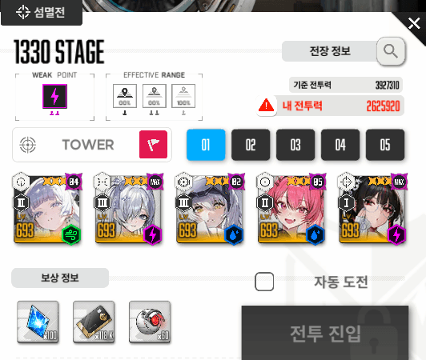
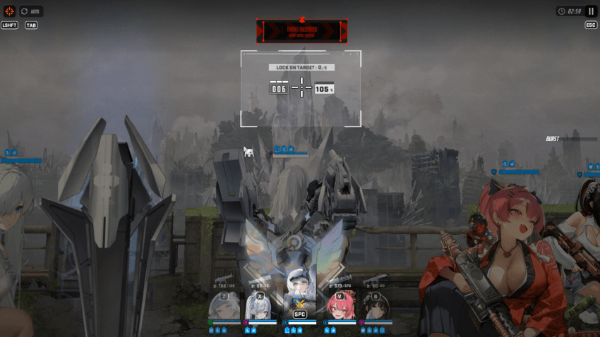
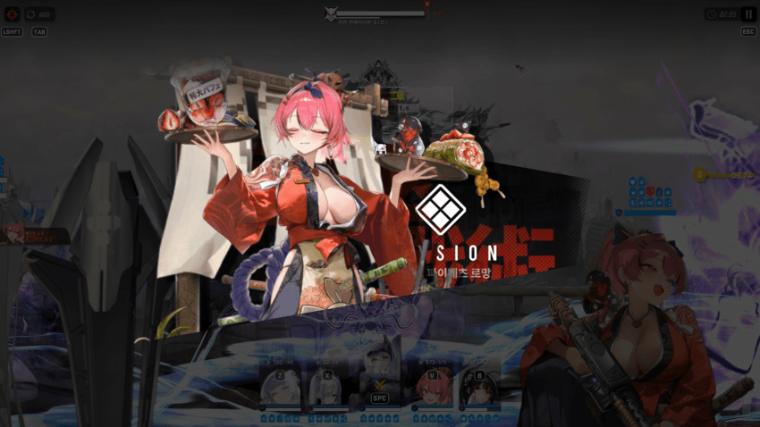
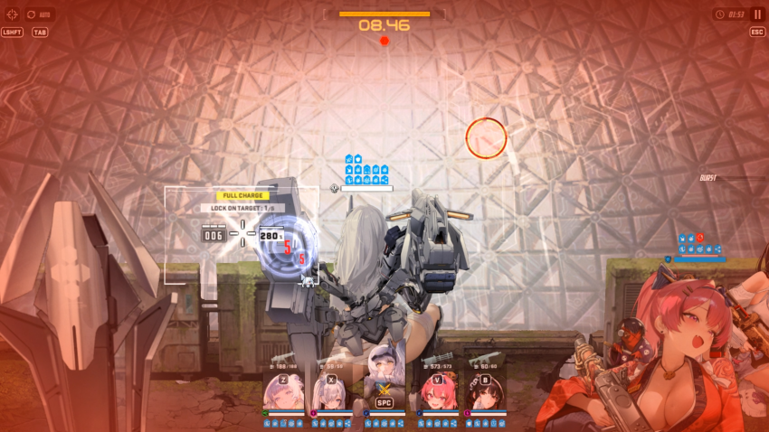
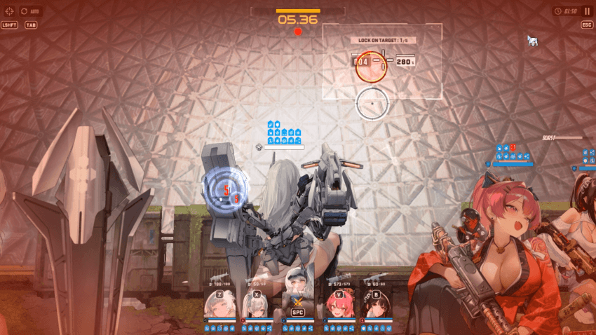
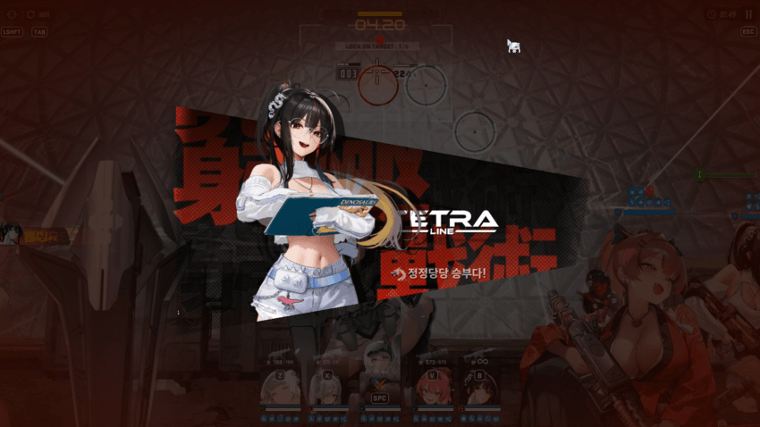
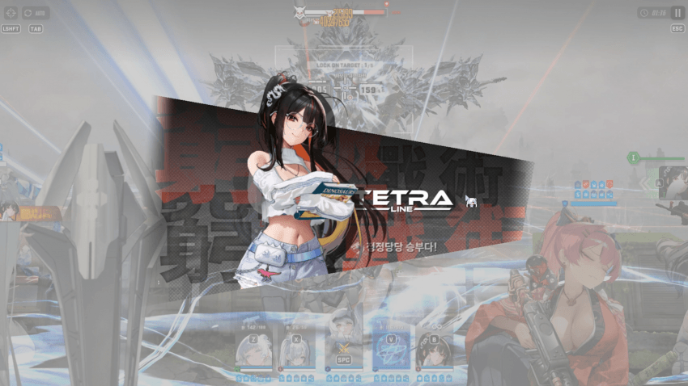
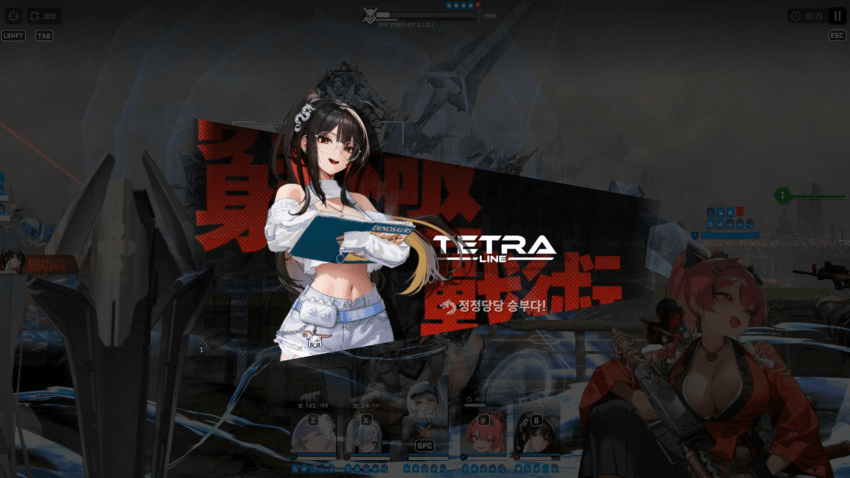

조합은 이렇게 갔음 나유타 신데 각설 마스트 목단
나는 크라운 버프 보다 나유타 버프가 더 좋게 딜량이 나오기도 하고
중간에 목단 도발 풀려서 각설이 맞는거 땜빵도 가능하고 후반부 목단이나 스화 죽는거 고려해서 넣었음

시작하자 마자 바로 스화 풀차지 잡기
안 그러면 버스트 늦게 써져서 밀림
1페 저지 패턴 가기 전 까지 오토 에임 해도 지장 없음
버스트는 신데 먼저
1페안에 최대한 딜 최대한 넣어야 해서 신데 먼저 쓰는 건 당연함
처음은 나나마 패턴으로 굴림 여러번 해본 결과 딜량은 이게 더 좋게 나왔었음

속저패턴때 (2분 5초) 마스트2스텍+신데 버스트 써주기
속저도 마찬가지로 딜 최대한 넣게 저지 최대한 늦게 해주기

속저 끝나고 저지 패턴 나오는데 버충 땡기려고 스화 풀차지 허공 1발 발사

저지할때 풀 차지로 땡기고 저지 원 쏘면 흰 원 건드리는거 같음 사이드 쪽 때리는거 추천함
1번째, 2번째 저지 패턴은 스화 풀 차지로 때려서 버스트 땡겨주기

저지 3번째 꺼 오면 버스트 쓰기
왜 이때 버스트를 쓰냐면 2페 유리구두 생성하기 전에
신데 버스트 한번이라도 더 넣을 수 있음

1분 36초 남았을때 버스트 쓰는게 제일 마지막일듯
안그러면 딜 다 안 들어가

첫 번째 유리구두 부시기전에 미사일 발사하는 거 버티긴 하는데 왠만해선 날아오기 전에 버스트 키는거 추천함
저거 맞으면 너무 아픔..
이외엔 평소 미컨 잡는거처럼 해주면 될듯
https://m.dcinside.com/board/gov/5180695
컨트롤도 겁나 못하지만 전체적인 영상도 찍어옴..